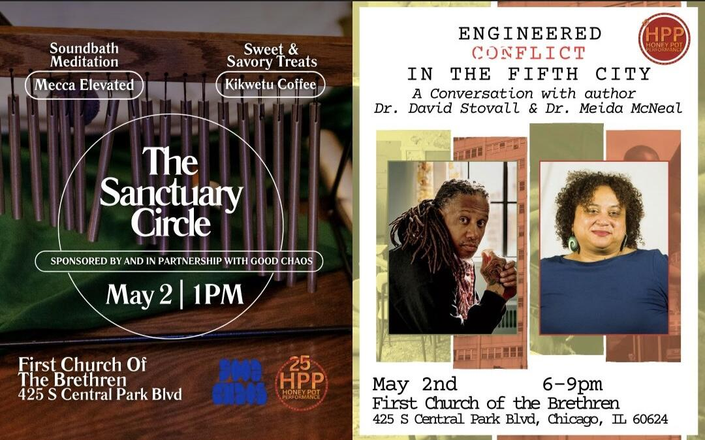

The Sanctuary Circle
Step into the First Church Sanctuary for The Sanctuary Circle, a free community wellness experience rooted in AfroDiasporic healing traditions. This special gathering will feature a restorative soundbath meditation led by Mecca Elevated, weaving breath, sound, and reflection into a shared space for restoration, creativity, and collective care. Hosted by Honey Pot Performance with support from Good Chaos and sweet and savory treats from Kikwetu Coffee, this offering is free and open to all who wish to experience HPP’s world of embodied artistry and connection.
Tickets
For 25 years, Honey Pot Performance has worked hard to support and uplift PGM/BIPOC communities, always making sure that PGM/BIPOC artists and scholars are leading the way in our organization. Through performances, sharing knowledge, archiving, and engaging with the public humanities, we create a space where the perspectives of artists of color are front and center. Our work focuses on how people navigate their identity, sense of belonging, and differences in their lives and communities.
Each year, we invite communities to join us through collective storytelling, archiving, and creative exploration—offering space to express, mark intentions, challenge societal norms, and expand together. This year we focus back in on roots community storytelling, activation and performance through themes of joy as we enter Phase 2 of our project, Pleasure Power Portal. We also continue our longstanding public humanities work with the Chicago Black Social Culture Map, inviting communities to chronicle and preserve the lived experiences of Black Chicagoans, from the Great Migration through the rise and future of House music.